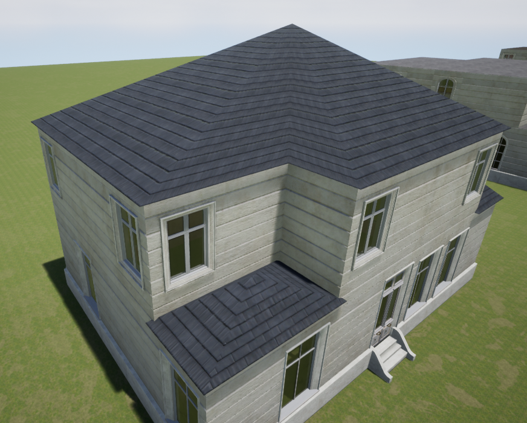

This week I worked on improving the roof and adding trims and corner meshes
I spent a lot of hours this week improving the roof. I tried two different ways of breaking up the roof into multiple sections, however both were not very successful.
The video below is of one of the methods were I tried to break the roof into sections and decide the roof shape based on the number of vertices on the outside, however I could not connect the sections nicely.
The second attempt was to break the roof into smaller squares but that did not look right and was failing in some cases.
I finally decided to go back to the original roof generation I had and just fix the UV and add trims to hide the connections. Although this roof is not very accurate, I'm happy with how it looks and I needed to move on to other work.
The left picture is before the improvements and the right one is after

I them moved on to adding corner meshes to cover wall gaps.
Next week, I will be working on adding a trim under the roof, polishing, and preparing for the final presentation.